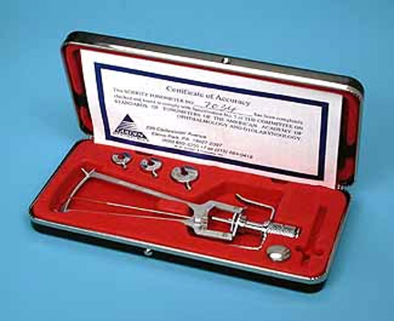
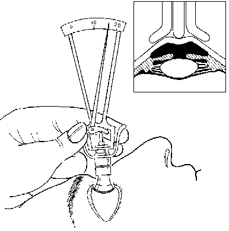
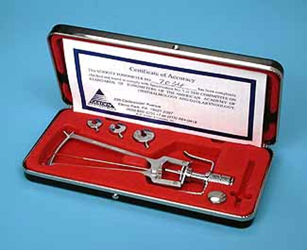
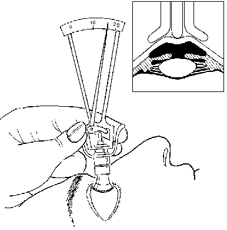

Schiotz tonometer
* Định nghĩa:
+ Nhãn áp kế Schiotz  Bộ nhãn áp kế Schiotz  Kỹ thuật đo nhãn áp bằng nhãn áp kế Schiotz
+ Nhãn áp kế Schiotz

Bộ nhãn áp kế Schiotz

Kỹ thuật đo nhãn áp bằng nhãn áp kế Schiotz